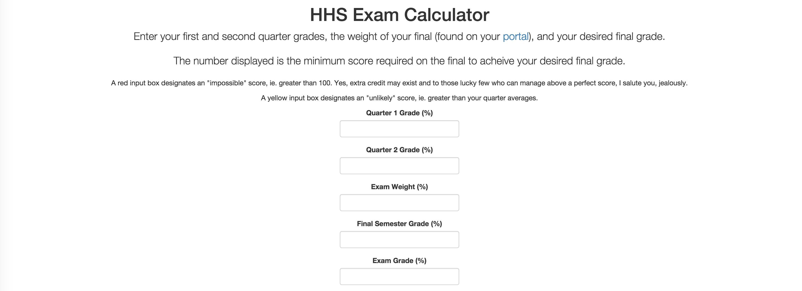

Ben Chaimberg: programmer, student, innovator
Projects
In chronological order by start date, the projects that follow are of the few ideas that have not been abandoned within days of conception.
Exam Calculator
In an environment as competitive as Hanover High School, grade obsession becomes a constant presence nearing exam time. So why not obsess accurately?
A clean and simple application, inputs of quarter grades, exam weight, and desired semester grade produce an output of the minimum score on the final required to acheive the aforemotioned desired semester grade. With alerts when the goal might be stretching the limits of the student, or even impossible, this application sees its greatest use in January and June. Written in simple Javascript with JQuery and Bootstrap plugins, the interface is sleek and compatible with any device.
Calculate your exam score here!

About
An enthusiastic first-year undergraduate at the University of Chicago, Ben has a penchance for tinkering with everything within his grasp. His eye for patterns and desire to learn drives him to explore and comprehend the world to its farthest boundaries.
Résumé
Download Ben's résumé here as a PDF.
Education
The following institutions have played a pivotal role in the development of intellectual curiosity and skill.
September 2015 —
Present
University of Chicago Chicago, IL
Enrolled in liberal arts core classes with a focus in physical and mathematical sciences.
August 2011 —
June 2015
Hanover High School Hanover, NH
Three-sport varsity athlete and captain of the varsity track and field team. Maintained high GPA while pursuing computer science and chorus as electives. Led a co-ed a cappella group and held the position of Secretary for school governance body. Graduated June 12, 2015.
August 2014 —
November 2014
Dartmouth College Hanover, NH
Completed Discrete Mathematics in Computer Science (COSC30) in Fall 2014 term through Dartmouth’s Special Community Student Program.
Work Experience
August 2011 —
Present
Web Designer Swing Paints, Ltd.
Designed, built, and deployed updates to web site, including mobile optimization. Worked with president and graphic designer to increase brand power and customer usability.
March 2015 —
October 2015
Book Reviewer Packt Publishing Ltd.
Reviewed Mastering Flask for programming errors and readability..
June 2015 —
September 2015
Content Operations Intern TomTom, Intl.
Researched locations for and categorized points of interest across the United States to enhance the mapping software provided to a variety of platforms.
September 2014 —
April 2015
Referee USA Hockey
Supervised and officiated youth hockey games of boys and girls aged 7-14.
Honors, Awards, and Memberships
February 2015
Presidential Scholar nominee, selected to recognize the nation’s most distinguished graduating high school seniors. 2,600 nominees selected from 3,000,000 students (<.1%).
February 2015
NHIAA Scholar Athlete, selected as a High School senior who has excelled in athletics as well as academics while demonstrating outstanding school and community spirit and leadership.
November 2014
Mensa International Member
June 2014 —
June 2015
Hanover High School Council Secretary, responsible for taking minutes, organizing documents, and handling all correspondance.
2011 — 2014
National Laureat, for performance on national french exam (Le Grand Concours) for grades 9, 10, and 11.
June 2014
Coaches' Award Recipient, spring track.
June 2014
Footnotes member, selected by audition for advanced-level chamber vocal and dance ensemble.
Contact
Ben ChaimbergBreckinridge House #247
1442 E. 59th St.
Chicago, IL 60637
(603) 667–8702
benchaimberg@gmail.com
GitHub: Youppi3